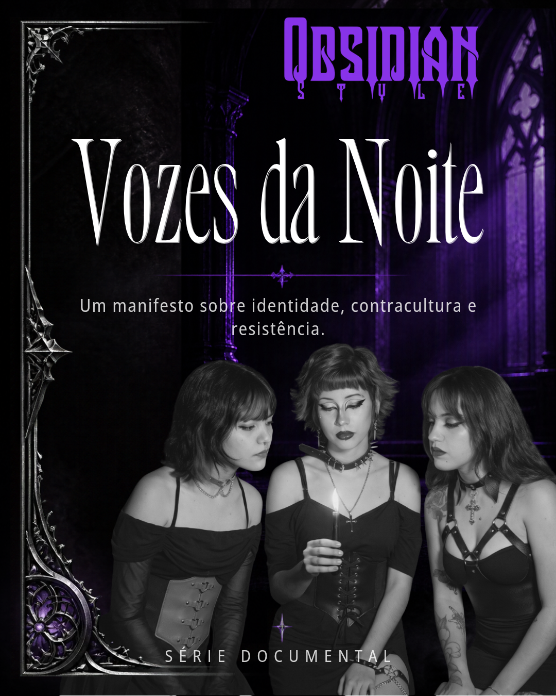

Moda & culturaObsidian Style: moda e identidade →
A marca de Franca e o papel dos acessórios na expressão da cultura alternativa.
Além do visual. Além dos rótulos.
Um espaço para conhecer a cultura alternativa por quem a vive. Histórias, referências e diferentes formas de expressão que desafiam estereótipos e ampliam olhares.

O documentário piloto apresenta o universo alternativo por meio de expressões, encontros e histórias. Quatro episódios adicionais compõem a proposta de continuidade do projeto transmídia.
Episódio 1: piloto produzido, com link de exibição a divulgar. Episódios 2 a 5: propostas de continuidade.
Descubra os episódios →Música, arte, comportamento e modos de expressão. A cena alternativa não cabe em uma única definição.
A marca de Franca e o papel dos acessórios na expressão da cultura alternativa.
Rock, punk, metal e outras sonoridades ajudam a criar vínculos e espaços de expressão.
Por que ouvir as pessoas é mais importante do que julgá-las pela aparência.
Não se trata apenas de ser diferente. Trata-se de ter liberdade para ser quem você é.
Noctivivium: onde identidades, histórias e expressões encontram espaço para existir.
Acompanhe os episódios, os conteúdos e as novidades do projeto.
Quero acompanhar →